CS 463G & CS 663
(Intro to) AI
Lecture 11: Local Search
Fall 2026
Searching for a Configuration
Local search keeps a current candidate and moves among nearby candidates. The goal is often a good final configuration.
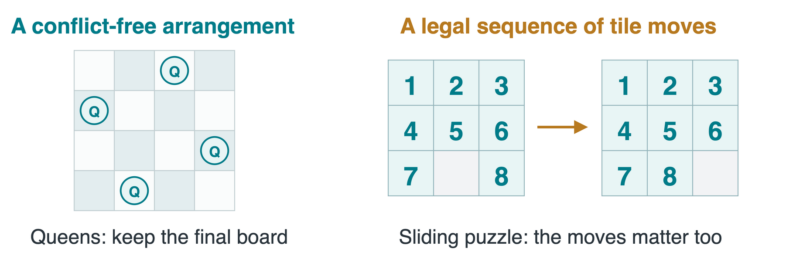
An objective function scores each candidate. We will minimize a cost c(s): lower is better.
Queens: State, Cost, and Neighborhood
- State s: one queen per column. Each list entry gives that queen’s row.
- Cost c(s): pairs sharing a row or diagonal, counting each pair once. A solution has c(s)=0.
- Neighborhood N(s): move one queen to a different row in its column.
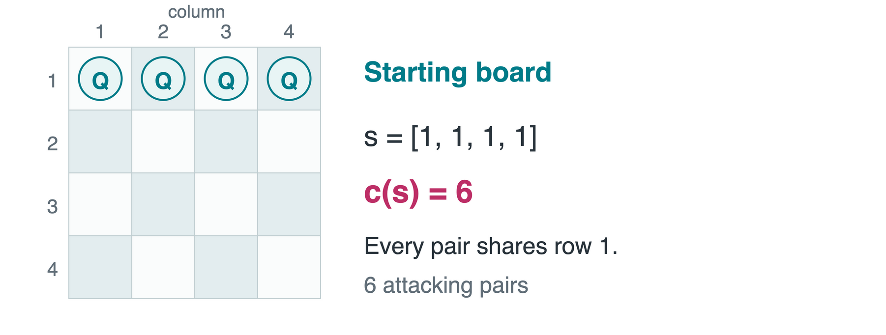
With 4 queens, how many neighbors? With 8 queens? 4\times3=12 and 8\times7=56.
A Greedy Queen-Move Trace
Hill climbing chooses a best immediate neighbor. For our cost, it moves downhill and accepts only a strict decrease.
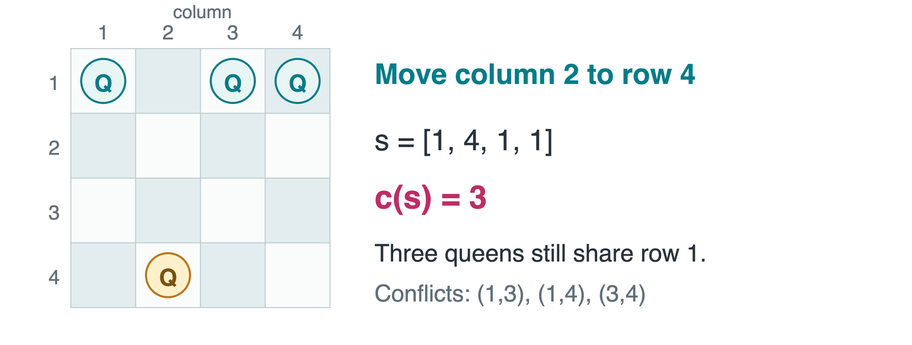
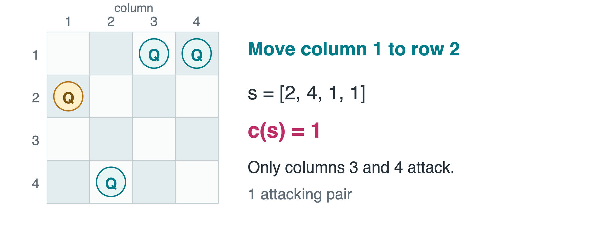
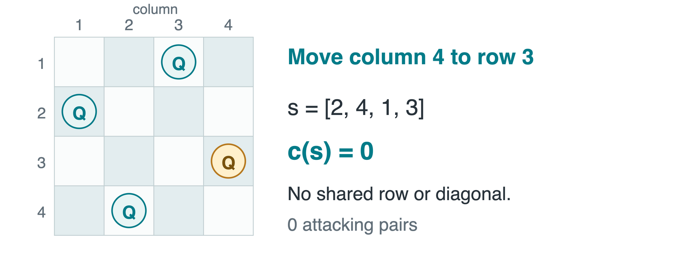
Move column 2: cost 6 to 3. Choose one of the best moves if tied.
Move column 1: cost 3 to 1. Recompute neighbors from the new board.
Move column 4: cost 1 to 0. This run succeeds, but other starting states can get stuck.
Hill-Climbing Pseudocode
s is the current state, N(s) its neighbors, and K a move budget. LOWEST_COST chooses a neighbor with smallest c.
HILL_CLIMB(s, K)
for step in 1 .. K:
if EMPTY(N(s)): return s
n <- LOWEST_COST(N(s))
if c(n) >= c(s): return s
s <- n
return s
Stopping means no strict local improvement or budget exhausted. Check the returned cost before calling it a solution.
A Local Minimum Can Stop the Search
A local minimum is no worse than its neighbors. A global minimum has the lowest cost in the entire state space below.
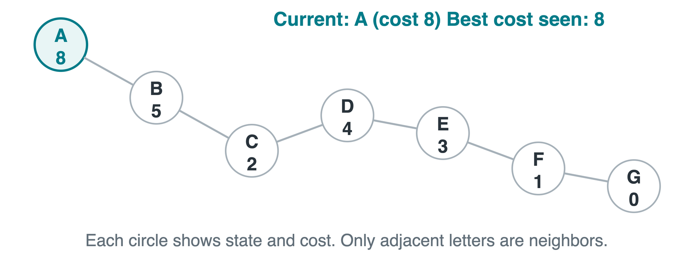
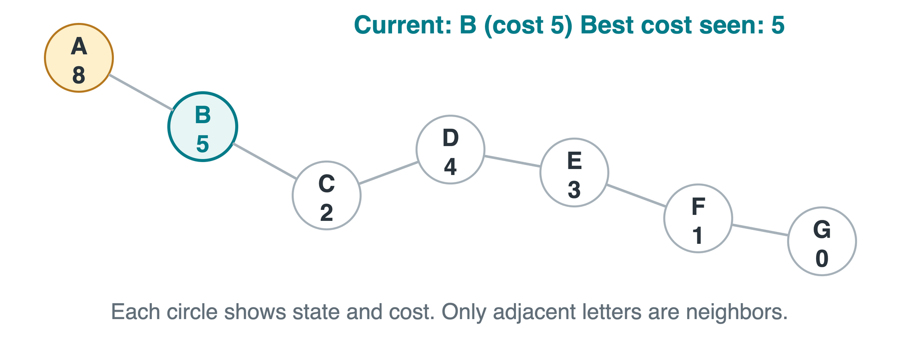
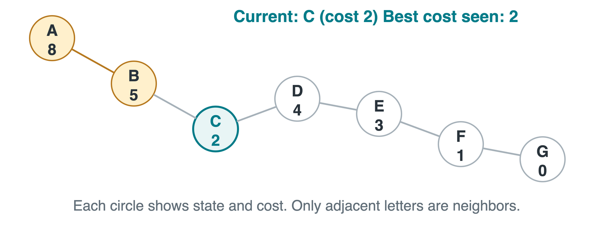
From A, move to B: cost 8 to 5.
From B, move to C, cost 2. Then stop: B costs 5, D costs 4. The better state G is beyond a worsening move.
Plateaus and Restricted Moves
A plateau has equal-cost neighbors. A ridge for a score, or narrow valley for a cost, may point between the allowed move directions.
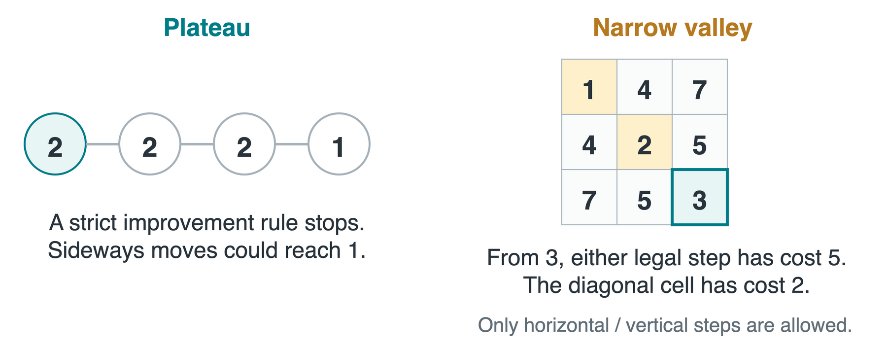
Limited sideways moves can cross a plateau but may cycle. A different neighborhood can help, when the problem permits it.
Random Restarts
Start again from a new random candidate, run hill climbing, and keep the best result across runs.
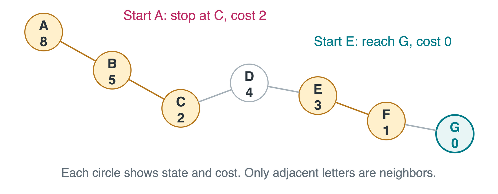
A restart changes the starting region. Use a time or restart budget: finite attempts do not guarantee success.
Simulated Annealing: Crossing a Cost Barrier
Annealing heats a material and cools it. Simulated annealing borrows the temperature idea: it sometimes accepts a worse candidate.
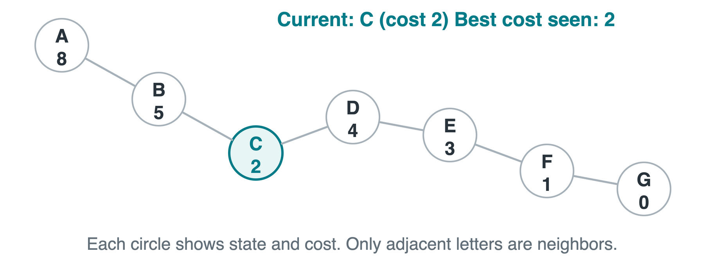
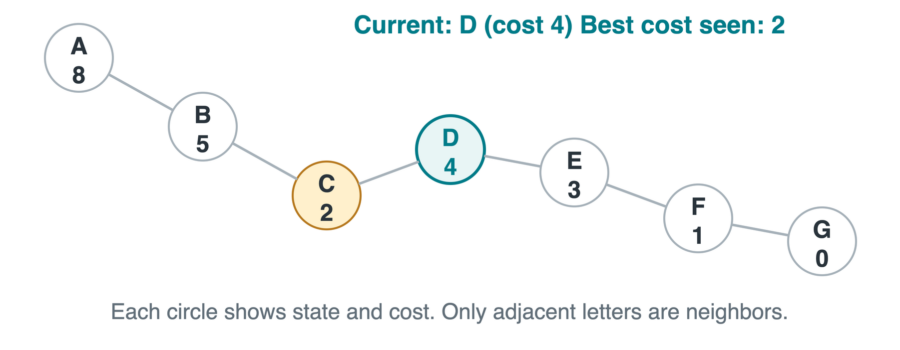
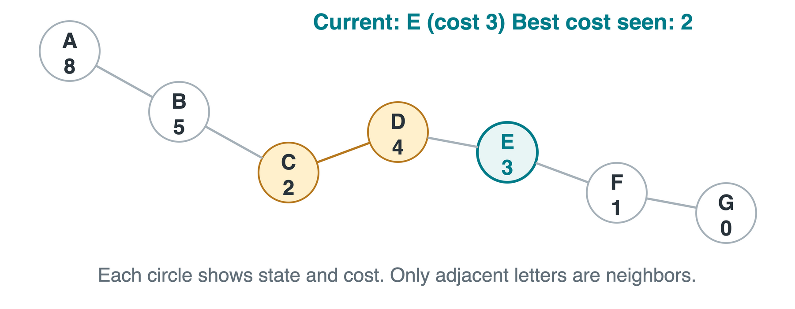
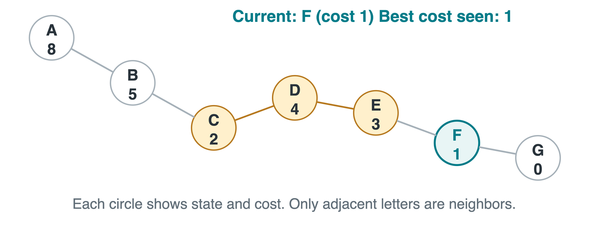
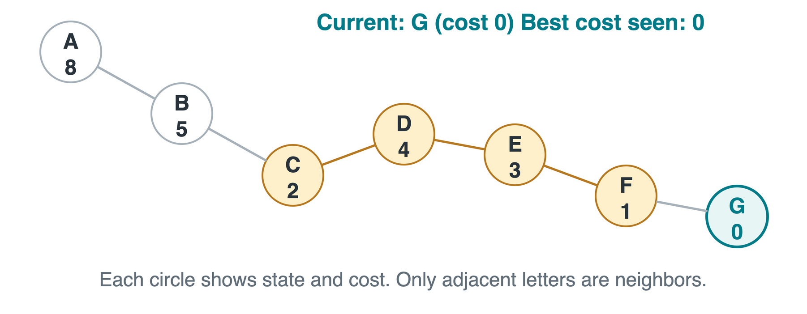
Suppose we accept C to D: cost rises from 2 to 4.
Then propose E, cost 3. It improves on D, though C was better.
Then F, cost 1, improves the best record.
Then G, cost 0. This is one possible random trajectory, not a guaranteed route.
The Annealing Acceptance Rule
For current state s and proposed neighbor n, let \Delta=c(n)-c(s). Temperature T>0 controls acceptance of a cost increase.
P(\text{accept})=
\begin{cases}
1, & \Delta\le0,\\
\exp(-\Delta/T), & \Delta>0.
\end{cases}
For a proposed cost increase from 2 to 4, \Delta=2. Draw u uniformly from [0,1) and accept if u<P(\text{accept}).
| 4 |
e^{-0.5}\approx0.607 |
Accept |
| 1 |
e^{-2}\approx0.135 |
Reject |
| 0.25 |
e^{-8}\approx0.000335 |
Reject |
Simulated-Annealing Pseudocode
K limits proposals. schedule(t) gives temperature at iteration t. COPY preserves a separate best-state snapshot.
ANNEAL(s, K, schedule)
best <- COPY(s)
for t in 0 .. K - 1:
T <- schedule(t)
if T <= 0: break
n <- RANDOM_NEIGHBOR(s)
delta <- c(n) - c(s)
p <- 1 if delta <= 0 else EXP(-delta / T)
if UNIFORM(0, 1) < p:
s <- n
if c(s) < c(best): best <- COPY(s)
return best
The current state may get worse. Update best only when its cost improves.
Cooling and the Best-State Record
A cooling schedule lowers temperature: T(t)=T_0\rho^t, with starting temperature T_0>0 and cooling factor 0<\rho<1.
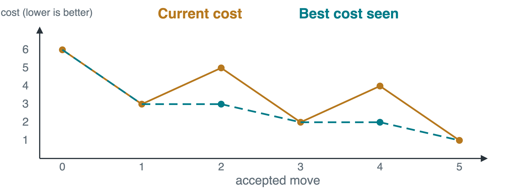
- Cooling too fast can freeze the search near a local minimum.
- Cooling slowly spends more of the budget exploring. Test several random seeds.
Current cost 4, best seen 2. Which state should we return? The saved state with cost 2.
Takeaways
| Hill climbing |
Take a best strictly improving neighbor |
Can stop above the global minimum |
| Random restarts |
Try new starts, keep the best result |
Repeated work, limited attempts |
| Simulated annealing |
Sometimes accept a worse candidate |
Depends on proposals and cooling |
Define the state, cost, and neighborhood precisely. Check whether an algorithm returns the current state or the best state it has seen.
Code: Simulated annealing notebook
Demo: Sliding puzzle
Asset credits